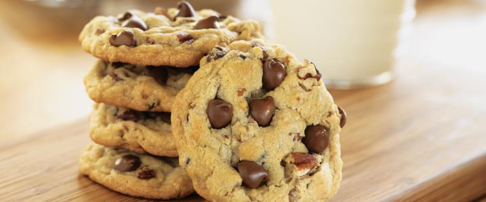

Шоколадное печенье

- TODO
Разогреть духовку на 190 градусов. 125 гр. сливочного масла комнатной температуры смешать с 125 гр. сахара и ванилькой. Взбить 1 яйцо и по чуть чуть мискером ввести в смесь. Добавить 220 г муки, щепотку соли и 125 г шоколада (поломанного не очень мелко).
Сформировать круглые печеньки и выложить на смазанный маслом противень. Выпекать 12-15 минут.
 Назад к списку рецептов
Назад к списку рецептов